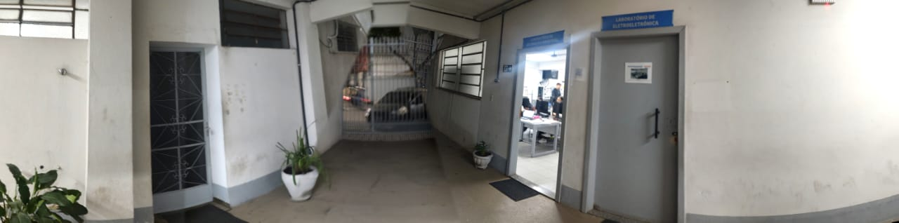
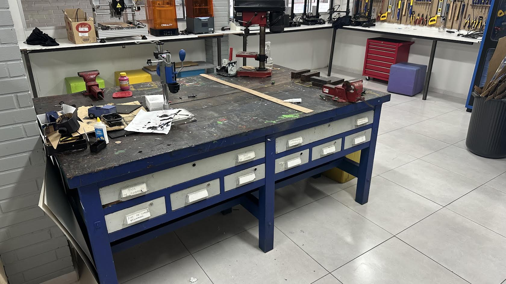
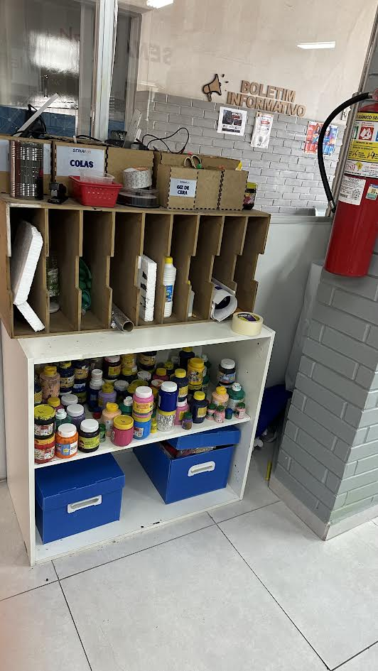
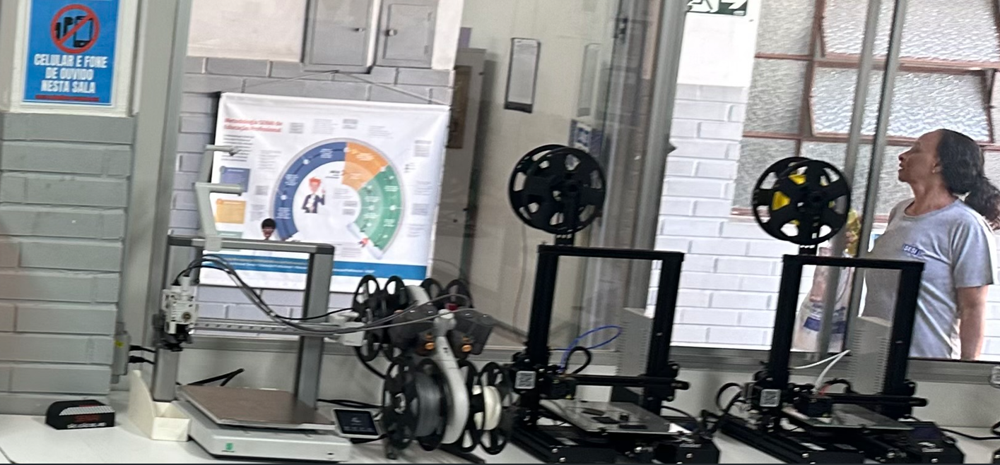
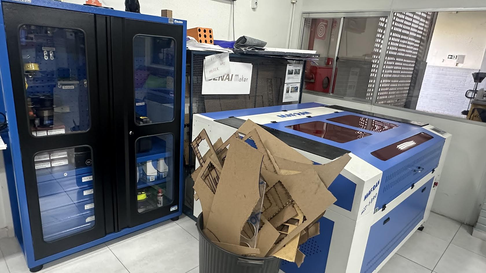
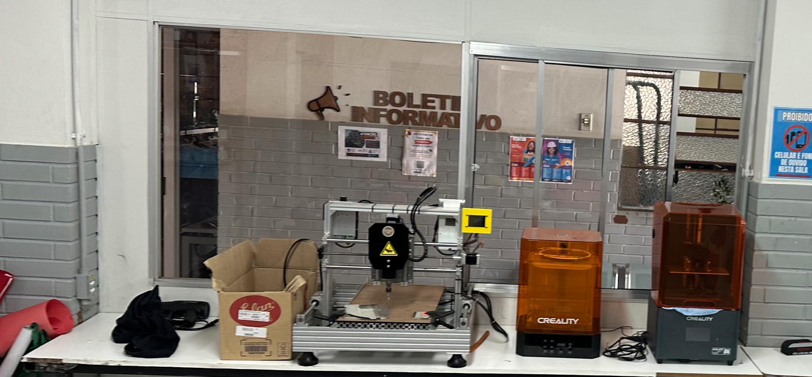

O que é o SENAI Lab?
O SENAI Lab é um espaço onde os alunos podem aprender na prática, desenvolver projetos e conhecer novas tecnologias.
Nesse ambiente, os estudantes podem criar ideias, testar soluções e trabalhar em equipe.

Conheça nosso laboratório em realidade virtual!
CLIQUE NA IMAGEM PARA EXPLORAR O AMBIENTE EM 360°.
Explore o ambiente utilizando seu celular ou os óculos VR One Plus.
Cursos que podem utilizar o SENAI Lab
Robótica: criação e programação de robôs.
Mecânica: desenvolvimento e montagem de peças.
Eletroeletrônica: estudo de circuitos e componentes eletrônicos.
Os cursos que utilizam o laboratório dependem da estrutura de cada unidade do SENAI.


Máquinas e equipamentos
Impressora 3D: produz objetos e peças a partir de modelos digitais.
Máquina de corte a laser: realiza cortes e gravações em materiais adequados.
Computadores: utilizados para programação e criação de projetos.
Ferramentas: ajudam na montagem e nos testes dos projetos.
Os equipamentos citados são exemplos. Consulte o professor para confirmar quais existem na unidade de vocês.



Qual é a importância do SENAI Lab?
O SENAI Lab ajuda os alunos a aprender na prática e a desenvolver novas habilidades.
Também incentiva a criatividade, o trabalho em equipe e a resolução de problemas.
Esse espaço contribui para preparar os estudantes para o mercado de trabalho e para a indústria.
Contato
Telefone: 32 988020862
E-mail: contato@senaialab.com.br